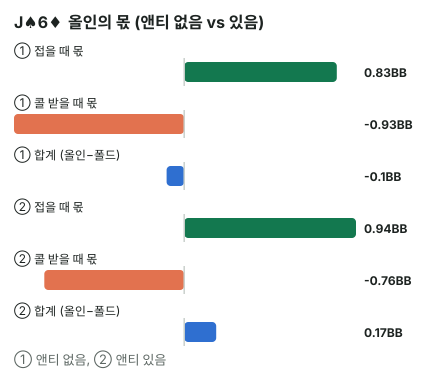

안녕하세요. I18에서 올인이 두 가지 길(상대가 접을 때·콜 받고 이길 때)로 돈을 번다는 걸 봤고, I19에서는 앤티 없이 SB 8BB 올인을 계산했죠(그때는 헤즈업에 BB 스택이 더 깊어 오늘과 숫자가 달라요).
오늘은 자리·스택은 그대로 두고 앤티만 넣었다 뺐다 해요. 같은 J♠6♦가 앤티 하나로 폴드에서 올인으로 바뀌는데, 그 이유를 두 길의 몫으로 하나씩 뜯어볼게요.
이 글에서 배울 것
- 앤티가 붙으면 폴드했을 때 스택·상대가 접으면 버는 돈·콜 받을 때 이기고 지는 돈이 각각 어떻게 바뀌는지
- 앤티가 SB 올인만이 아니라 BB 콜 범위까지 넓히는 두 가지 이유
- BB가 덜 접는데도 SB 올인이 더 이득이 되는 원리
오늘의 핸드 (조건 고정)
6명 테이블, 모두 8BB. 블라인드 SB 0.5BB · BB 1BB예요. 두 경우를 나란히 놓아요.
- ① 앤티 없음
- ② 앤티 1인당 0.125BB
Hero (SB · 8BB)


프리플랍 · 시작 팟 ① 1.5BB / ② 2.25BB
앞의 네 명이 모두 폴드하고 Hero 차례예요. 남은 사람은 BB 한 명. 올인할까, 폴드할까?
결론부터 말할게요. 이 조건에서 J♠6♦는 앤티가 없으면 폴드(올인하면 약 −0.1BB), 앤티가 있으면 올인(약 +0.17BB)이 이득입니다.
숫자는 뚝섬 AOF 차트 엔진의 올인/폴드 이론값(칩 기준, 카드 제거 없음)이에요. BB도 엔진 이론값 범위대로 콜한다고 가정했을 때의 값이에요. 여기서 엔진 이론값은 SB와 BB가 서로의 범위를 알고 각자 최선으로 맞춰, 어느 쪽도 더 바꿀 게 없어진 범위예요.
1단계. 앤티가 판돈을 어떻게 바꾸나
한 줄 정의
앤티 = 카드를 받기 전에 테이블 모두가 똑같이 내는 돈이에요. 블라인드는 두 자리만 내지만, 앤티는 여섯 명 전부가 내요.
비유하면 판 위에 미리 깔린 상금이에요. 아무도 아직 자기 것이라고 주장하지 않은 돈이 가운데 놓여 있으니, 먼저 집어 가려는 사람이 이득을 봐요.
시작 팟
- ① 앤티 없음: SB 0.5 + BB 1 = 1.5BB
- ② 앤티 있음: 앤티 합계 6 × 0.125 = 0.75BB를 더해 1.5 + 0.75 = 2.25BB
블라인드는 그대로인데 가운데 돈이 절반만큼 더 커졌어요. 이게 오늘 모든 변화의 출발점이에요.
폴드했을 때 스택이 기준이에요
올인이 이득인지 보려면 폴드했을 때 남는 스택과 비교해요. 앤티는 카드를 받기 전에 이미 낸 돈이라, 폴드해도 못 돌려받아요.
- ①: 8 − 0.5(SB) = 7.5BB
- ②: 8 − 0.125(앤티) − 0.5(SB) = 7.375BB
이게 무슨 뜻이냐면, ②에서 Hero가 올인하며 새로 거는 돈은 7.375BB예요. 이미 낸 앤티와 SB는 "내 돈"이 아니라 이미 팟에 들어간 돈이에요.
2단계. 두 길의 몫 나누기
식이 왜 이렇게 생겼나
올인하면 두 가지 일 중 하나가 일어나요. BB가 접거나, 콜하거나요. 그래서 폴드 대비 이득은 두 몫의 합이에요.
올인 − 폴드 = 접는 비율 × 접으면 버는 돈 + 콜 비율 × 콜 받은 판 평균
I18에서 본 두 길을 식으로 적은 거예요. 앞 몫은 늘 플러스, 뒤 몫은 이 핸드에서는 마이너스예요. 둘을 더해 0보다 크면 올인이에요.
접으면 버는 돈
BB가 접으면 Hero는 가운데 돈을 전부 가져와요.
- ①: 8 + 1(BB) = 9BB → 9 − 7.5 = 1.5BB
- ②: 7.875(앤티 뒤 스택) + 1(BB) + 0.75(앤티 합계) = 9.625BB → 9.625 − 7.375 = 2.25BB
버는 돈 = 시작 팟 전체예요. 내가 낸 SB와 앤티를 돌려받는 몫까지 들어가니까요.
콜 받았을 때 이기고 지는 돈
②에서 BB가 콜하면, 두 사람이 8BB씩 넣고 나머지 네 명의 앤티 4 × 0.125 = 0.5BB가 더해져 팟이 16.5BB예요.
- 이기면: 16.5 − 7.375 = 9.125BB 벌어요(①은 16 − 7.5 = 8.5BB)
- 지면: 폴드 스택 7.375BB를 잃어요(①은 7.5BB)
J♠6♦로 계산하기
| ① 앤티 없음 | ② 앤티 있음 | |
|---|---|---|
| BB가 접는 비율 | 약 55.52% | 약 41.69% |
| BB가 콜하는 비율(1 − 접는 비율) | 약 44.48% | 약 58.31% |
| 접을 때 몫 | 0.55524 × 1.5 = 약 +0.83 | 0.41693 × 2.25 = 약 +0.94 |
| 콜 범위 상대 J♠6♦ 에퀴티 | 약 33.8% | 약 36.8% |
| 콜 받은 판 평균 | 0.3382 × 8.5 − 0.6618 × 7.5 = 약 −2.09 | 0.36762 × 9.125 − 0.63238 × 7.375 = 약 −1.31 |
| 콜 받을 때 몫 | 0.44476 × (−2.08887) = 약 −0.93 | 0.58307 × (−1.3093) = 약 −0.76 |
| 올인 − 폴드 | 약 −0.1BB | 약 +0.17BB |

이게 무슨 뜻이냐면
접는 비율은 55.52%에서 41.69%로 줄었어요. 그런데 접을 때 몫은 오히려 0.83 → 0.94로 커졌어요. 접어 주는 횟수는 줄었지만, 한 번 접어 줄 때 가져오는 돈이 1.5BB → 2.25BB로 더 크게 늘었기 때문이에요.
BB가 콜하는 비율은 3단계 표의 BB 콜 범위(약 44.5% / 약 58.3%)와 같은 숫자예요. 콜 받을 때 몫도 −0.93 → −0.76으로 덜 아파요. 콜을 더 자주 받는데도요. 콜 받은 한 판의 평균 손해가 −2.09에서 −1.31로 크게 줄었거든요. 이유는 3단계에서 봐요.
3단계. BB 콜 범위가 넓어지는 두 가지 이유
| ① 앤티 없음 | ② 앤티 있음 | |
|---|---|---|
| SB 올인 범위 | 약 62.7% | 약 74.2% |
| BB 콜 범위 | 약 44.5% | 약 58.3% |
| BB 콜 필요 승률 | 7 ÷ 16 = 43.75% | 6.875 ÷ 16.5 = 약 41.67% |
이유 하나: 콜이 싸졌어요
①에서 BB는 이미 낸 1BB를 빼고 8 − 1 = 7BB를 더 내서 16BB 팟을 노려요. ②에서는 앤티를 내고 남은 7.875BB에서 1BB를 뺀 7.875 − 1 = 6.875BB로 16.5BB 팟을 노려요.
더 적게 내고 더 큰 팟을 노리니 필요 승률이 내려가요. 다만 43.75%에서 41.67%로, 생각보다 조금이에요.
이유 둘: 상대하는 올인 범위가 약해졌어요
더 큰 이유는 SB 쪽이에요. 앤티가 붙으면 SB 올인 범위가 62.7%에서 74.2%로 넓어져 약한 핸드가 많이 섞여요. 상대 범위가 약해지면 BB가 이길 수 있는 핸드도 늘어서, 콜 범위가 44.5%에서 58.3%로 넓어져요.
그래서 J♠6♦의 에퀴티가 올라가요
BB 콜 범위가 넓어진다는 건 더 약한 핸드까지 콜한다는 뜻이에요. ①에서 콜하는 BB는 강한 핸드 위주라 J♠6♦가 약 33.8%였지만, ②에서는 약한 콜까지 섞여 약 36.8%로 올라가요.
이게 무슨 뜻이냐면, 앤티는 BB가 콜하는 횟수를 늘리는 대신 콜하는 핸드의 질을 낮춰요. 그래서 콜 받는 것 자체가 덜 아파져요.
왜 끝없이 넓어지지 않나
SB가 넓어지면 BB가 넓게 콜하고, BB가 넓게 콜하면 SB의 접을 때 몫이 줄어요. 이렇게 서로 밀고 당기다가 양쪽 다 더 넓히거나 좁힐 이유가 없는 지점에서 멈춰요. 그게 엔진 이론값이고, 앤티가 있으면 그 멈추는 자리가 양쪽 모두 더 넓은 쪽으로 옮겨 가요.
왜 그럴까: 앤티는 거는 돈은 거의 그대로 두고 가져오는 돈을 키워요
거는 돈 대비 가져오는 돈
①에서 Hero는 7.5BB를 걸어 1.5BB를 노려요. ②에서는 7.375BB를 걸어 2.25BB를 노려요. 거는 돈은 거의 그대로인데 노리는 돈은 절반만큼 더 커졌어요.
앤티는 모두가 똑같이 내니 Hero의 거는 돈은 오히려 조금 줄고, 가져올 돈은 여섯 명분만큼 커져요. 위험 대비 보상 비율이 좋아지니 더 많은 핸드가 본전을 넘어요.
세 가지 변화 중 하나만 SB에게 불리해요
앤티가 바꾼 걸 SB 입장에서 모아 볼게요.
- 접으면 버는 돈 1.5 → 2.25BB: 유리
- 콜 받고 이기면 버는 돈 8.5 → 9.125BB, 콜 범위 상대 에퀴티 33.8% → 36.8%: 유리
- BB가 접는 비율 55.52% → 41.69%: 불리
불리한 건 하나뿐이고, 이 조건에서는 앞의 둘이 그걸 넘어서요. 그래서 J♠6♦처럼 앤티 없이는 살짝 모자라던 핸드가 본전을 넘어 올인 범위가 넓어져요.
같은 이유로 BB도 넓어져요
BB 입장에서도 팟은 커지고 상대 범위는 약해졌어요. 그래서 양쪽이 함께 넓어지는 게 앤티 테이블의 모습이에요. 한쪽만 넓어진다고 생각하면 계산이 어긋나요.
자주 하는 실수
실수 1. 폴드했을 때 스택을 8BB로 놓기 앤티와 SB는 이미 낸 돈이라 폴드해도 안 돌아와요. ②의 기준은 8BB가 아니라 7.375BB예요. 8BB로 놓으면 거는 돈도, 접으면 버는 돈도 함께 틀려서 두 몫이 모두 어긋나요.
실수 2. "앤티가 있으면 BB가 더 콜하니까 올인은 손해" 접는 비율만 보면 그래 보여요. 오늘도 55.52%에서 41.69%로 줄었죠. 하지만 접을 때 몫은 커졌고 콜 받을 때 몫은 덜 아팠어요. 접는 비율 하나가 아니라 두 몫의 합으로 판단해야 해요.
실수 3. 앤티를 넣으면서 BB 콜 범위는 그대로 두기 SB 쪽 팟만 키우고 BB는 앤티 없을 때처럼 44.5%만 콜한다고 두면, 접는 비율을 실제보다 크게 잡아 올인이 지나치게 좋아 보여요. 앤티를 바꾸면 상대 콜 범위도 같이 바꿔야 해요.
"②에서도 콜 받으면 J♠6♦가 지는 쪽이 많은데, 왜 올인이에요?"
맞아요. 콜 받으면 J♠6♦는 약 63.2%로 져요. 콜 받은 판만 따로 보면 평균 약 −1.31로 손해예요.
하지만 올인은 콜 받은 판만으로 평가하지 않아요. BB가 접는 판에서 0.94를 먼저 벌어 두고, 콜 받는 판에서 0.76을 내줘요. 콜 받은 판의 손해가 그대로 다 들어오는 게 아니라, 콜 비율만큼만 들어온다는 게 포인트예요.
숫자가 뒤집히는 지점
기준은 접을 때 몫 + 콜 받을 때 몫이 0보다 큰지예요. 앤티가 커질수록 가져오는 돈은 커지지만 BB가 접는 비율은 줄어서, 두 몫을 함께 다시 봐야 해요.
또 오늘 숫자는 BB가 엔진 이론 범위대로 콜한다는 가정 위에 있어요. BB의 실제 콜 범위가 그보다 좁거나 넓으면 접는 비율과 콜 받을 때 에퀴티가 함께 바뀌어 결론이 달라질 수 있어요.
선생님의 한마디
앤티 테이블에서 푸시/폴드를 따질 때 이 순서로 봐요.
- 앤티 합계 = 1인당 × 인원을 구해 시작 팟에 더하기
- 폴드했을 때 스택(앤티·블라인드를 뺀 값)을 기준점으로 세우기
- 상대 콜 범위도 앤티가 있을 때 값으로 바꾸고 나서 두 몫을 더하기
연습 문제
뚝섬 AOF 차트(새틀 프리플랍 차트) → 그외 게임들에서 앤티(없음 / 1인당 값) → 테이블 인원 6명 → 포지션 SB → 자리별 스택 6칸 모두 8BB로 넣어 SB 올인 차트를 비교해 보세요(화면은 실전 보정으로 조금 좁게 나와요). 홀덤학습 푸시/폴드 트레이너도 앤티 있는 올인을 연습할 수 있지만, 9인·빅앤티 기준이라 오늘 숫자와 달라요.
문제 1. 같은 6명·모두 8BB인데 앤티가 1인당 0.25BB로 두 배가 됐어요. 이 조건에서 Hero(SB)가 9♠5♦예요. 엔진 이론값으로 BB가 접는 비율은 약 29.95%, 콜 범위 상대 9♠5♦의 에퀴티는 약 35.18%예요. 폴드했을 때 스택, 접으면 버는 돈, 콜 받고 이기면·지면 금액부터 구해서 올인할지 정해 보세요.
정답 보기
폴드 스택 = 8 − 0.25 − 0.5 = 7.25BB. 접으면 시작 팟 0.5 + 1 + 1.5(앤티 합계 6 × 0.25) = 3BB를 벌어요. 콜 받으면 팟 = 8 + 8 + 1(나머지 네 명 앤티) = 17BB → 이기면 17 − 7.25 = 9.75BB, 지면 7.25BB를 잃어요. 콜 받은 판 평균 = 0.35184 × 9.75 − 0.64816 × 7.25 = 3.43044 − 4.69916 = 약 −1.27 올인 − 폴드 = 0.2995 × 3 + 0.7005 × (−1.26867) = 0.89851 − 0.8887 = 약 +0.01BB → 올인(아주 근소). BB가 열 번에 세 번꼴밖에 안 접는데도, 접을 때 가져오는 3BB가 커서 겨우 본전을 넘어요. 1인당 0.125BB일 때 9♠5♦는 약 −0.12BB로 폴드였어요.
문제 2. 오늘 ②(1인당 0.125BB)에서 Hero가 T♣6♥예요. 앤티 없을 때는 올인이 약 −0.09BB, 앤티가 있으면 약 +0.03BB예요. J♠6♦보다 약한 핸드인데 결론이 똑같이 뒤집혔어요. 두 몫 중 어느 쪽이 두 핸드에서 똑같고, 어느 쪽이 다른지 설명해 보세요.
정답 보기
접을 때 몫은 두 핸드가 똑같아요(②에서 둘 다 0.41693 × 2.25 = 약 +0.94). BB는 Hero 카드를 모르고 범위대로 접으니, 카드 제거를 무시한 이론값에서는 접는 비율과 버는 돈이 핸드와 상관없어요. 실제로는 Hero가 든 카드가 BB의 콜 핸드 몇 개를 막아(블로커) 접는 비율이 핸드마다 아주 조금 달라져요. 다른 건 콜 받을 때 몫이에요. T♣6♥는 콜 범위 상대 에퀴티가 약 35.3%로 J♠6♦(약 36.8%)보다 낮아 약 −0.9로 더 아파요. 그래서 이득이 +0.03으로 J♠6♦(+0.17)보다 작아요.
핵심 정리
- 앤티는 모두가 내는 판 위의 상금이라, 올인으로 접으면 버는 돈 = 시작 팟 전체가 커져요
- 앤티는 BB 콜 범위도 넓혀요: 콜이 조금 싸지고, 상대 올인 범위가 약해져서예요
- BB가 덜 접어도 접을 때 몫 + 콜 받을 때 몫이 커지면 올인 범위가 넓어져요
- 접을 때 몫은 핸드와 상관없이 같고, 핸드 차이는 콜 받을 때 몫에서 나요
정리하며
오늘은 6명·모두 8BB에서 앤티만 넣었다 빼며 SB J♠6♦의 올인을 두 몫으로 나눠 봤어요.
앤티가 붙자 BB가 접는 비율은 55.52%에서 41.69%로 줄었지만, 접으면 버는 돈이 1.5BB에서 2.25BB로 커졌고, 넓어진 BB 콜 범위 덕에 콜 받을 때 손해도 줄었어요. 그래서 약 −0.1BB였던 올인이 약 +0.17BB가 됐죠.
다음 글 E16에서는 앞에서 누가 먼저 오픈했을 때 짧은 스택으로 다시 올인하는 리스틸을 봐요. 오늘은 블라인드와 앤티만 깔린 팟이었다면, 다음 글은 상대 오픈까지 팟에 들어간 상황이에요.
AI 작성 · 숫자는 계산 검증 · 뚝섬 AOF 차트 엔진의 올인/폴드 이론값 (6명 · 모두 8BB · 앤티 없음 / 1인당 0.125BB(문제 1은 0.25BB) · 칩 기준 · 카드 제거 없음 · 화면의 실전 보정은 넣지 않음 · BB도 엔진 이론 범위대로 콜한다고 가정) · 올인 결정이라 이번 결정의 최종 결과